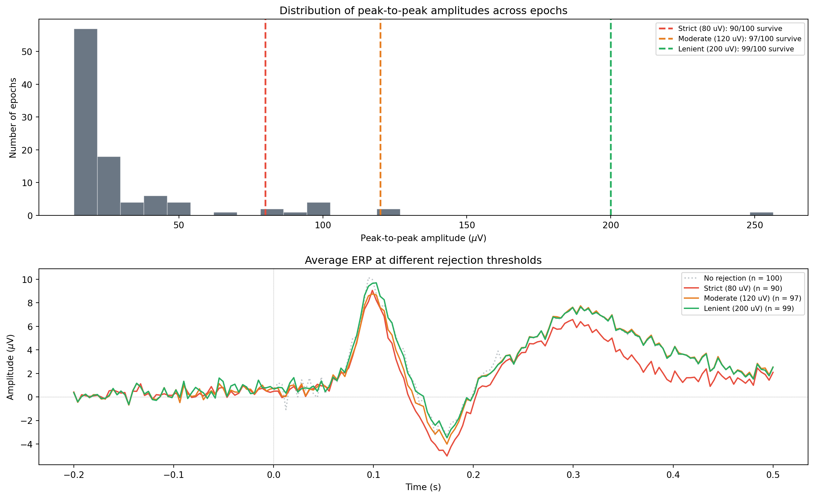

import mne
# Define rejection thresholds (in volts, not microvolts)
reject = dict(
eeg=150e-6, # 150 uV for EEG channels
eog=250e-6 # 250 uV for EOG channels (if present)
)
# Create epochs with rejection
epochs = mne.Epochs(
raw, events, event_id,
tmin=-0.2, tmax=0.5,
reject=reject,
preload=True
)Amplitude-based epoch rejection
artifacts
epochs
Peak-to-peak amplitude thresholds, flat channel detection, the reject and flat parameters in MNE’s Epochs, how to set thresholds, checking rejection statistics, and practical guidelines for choosing values.
Why this topic matters
After epoching your data, some epochs will contain artifacts: blinks, muscle bursts, electrode pops, or movement. You could inspect every epoch by eye and reject the bad ones manually, but that approach does not scale. If you have 40 participants with 300 epochs each, you need an automated way to flag bad epochs.
Amplitude-based rejection is the simplest and most widely used automated method. The idea is direct: if the voltage swing in an epoch is too large, the epoch probably contains an artifact. If the voltage swing is too small (the channel is flat), something is wrong with the electrode. You set upper and lower thresholds, and MNE automatically drops epochs that fall outside these bounds.
Peak-to-peak amplitude
The quantity that MNE checks is the peak-to-peak amplitude: the difference between the maximum and minimum voltage in each channel within each epoch.
\[\text{PTP} = \max(x) - \min(x)\]
For a clean EEG epoch, the peak-to-peak amplitude is typically between 20 and 150 \(\mu V\). An epoch with an eye blink might have a peak-to-peak amplitude of 200 to 500 \(\mu V\) at frontal channels. A flat (dead) channel might have a peak-to-peak amplitude below 1 \(\mu V\).
The rejection decision works per channel: if any channel in an epoch exceeds the threshold, the entire epoch is rejected. This is conservative (you lose the epoch even if only one channel is bad), but it ensures that every surviving epoch has clean data across all channels.
The reject parameter
When you create epochs in MNE, you can pass a reject dictionary that specifies the maximum allowed peak-to-peak amplitude for each channel type:
Note that the threshold values are in volts (SI units), not microvolts. This is a common source of confusion. To convert microvolts to volts, multiply by \(10^{-6}\).
The rejection is applied when epochs are loaded into memory (when preload=True) or when you call epochs.drop_bad().
The flat parameter
The flat dictionary specifies the minimum allowed peak-to-peak amplitude. Channels with less variation than this threshold are considered flat (non-functional):
# Define flat channel threshold
flat = dict(
eeg=1e-6 # 1 uV: channels with less than 1 uV peak-to-peak are flat
)
# Use both reject and flat
epochs = mne.Epochs(
raw, events, event_id,
tmin=-0.2, tmax=0.5,
reject=reject,
flat=flat,
preload=True
)Flat channels indicate a hardware problem (bad electrode contact, broken wire, or amplifier issue). Epochs with flat channels should always be excluded because the data from those channels is meaningless.
How to set thresholds
Choosing the right thresholds involves some judgement. There is no single correct value because the appropriate threshold depends on your recording equipment, the electrode cap, the participant population, and the experimental task. Here are some practical starting points.
Common starting values for EEG
| Channel type | Reject threshold | Flat threshold |
|---|---|---|
| EEG | 100-200 \(\mu V\) | 0.5-1.0 \(\mu V\) |
| EOG | 200-300 \(\mu V\) | 1.0 \(\mu V\) |
| MEG (gradiometers) | 200e-12 T/m | 1e-13 T/m |
| MEG (magnetometers) | 4e-12 T | 1e-13 T |
For a typical EEG study, starting with reject = dict(eeg=150e-6) and flat = dict(eeg=1e-6) is reasonable. You then adjust based on how many epochs survive.
A data-driven approach
Rather than guessing, you can look at the distribution of peak-to-peak amplitudes across all epochs and choose a threshold that separates the “bulk” of clean epochs from the outliers:
import numpy as np
# Get peak-to-peak amplitude for each epoch and channel
ptp = np.ptp(epochs.get_data(), axis=2) # shape: (n_epochs, n_channels)
# Look at the distribution
max_ptp_per_epoch = ptp.max(axis=1) # worst channel in each epoch
print(f"Median PTP: {np.median(max_ptp_per_epoch) * 1e6:.1f} uV")
print(f"95th percentile: {np.percentile(max_ptp_per_epoch, 95) * 1e6:.1f} uV")
print(f"Max PTP: {max_ptp_per_epoch.max() * 1e6:.1f} uV")If the 95th percentile is 120 \(\mu V\) and the maximum is 400 \(\mu V\), setting the threshold at 150 \(\mu V\) would reject roughly 5% of epochs (the ones with large artifacts) while keeping most of the data.
Using mne.preprocessing.compute_average_dev
MNE also provides autoreject, a library for automatically finding optimal rejection thresholds using cross-validation. It is more sophisticated than manual threshold setting, but also more computationally expensive. For many analyses, a well-chosen fixed threshold works just as well.
Checking rejection statistics
After creating epochs with rejection, you should check how many epochs survived and which were rejected. MNE provides several ways to do this:
# How many epochs survived?
print(f"Epochs remaining: {len(epochs)} / {len(events)}")
# Detailed drop log
epochs.plot_drop_log() # visual summary of why each epoch was dropped
# Access the drop log directly
drop_log = epochs.drop_log
n_dropped = sum(1 for d in drop_log if len(d) > 0)
print(f"Dropped: {n_dropped}")The drop log tells you not just how many epochs were rejected, but why each one was rejected (which channel exceeded the threshold). This is useful for identifying problematic channels: if one channel causes most of the rejections, you might want to interpolate or remove that channel rather than losing all the epochs it contaminates.
Working example
The code below creates simulated epochs with varying noise levels, applies amplitude-based rejection at different thresholds, and shows how the number of surviving epochs and the quality of the average change.
import numpy as np
import matplotlib.pyplot as plt
rng = np.random.default_rng(42)
# ── Simulation parameters ─────────────────────────────────────
sfreq = 256
n_epochs = 100
epoch_duration = 0.7 # seconds
n_samples = int(epoch_duration * sfreq)
times = np.linspace(-0.2, 0.5, n_samples)
# ── Generate epochs with varying noise levels ─────────────────
epochs_data = np.zeros((n_epochs, n_samples))
for i in range(n_epochs):
# ERP template: P100 + N170 + P300
erp = (
8e-6 * np.exp(-((times - 0.10) ** 2) / (2 * 0.015 ** 2))
- 6e-6 * np.exp(-((times - 0.17) ** 2) / (2 * 0.020 ** 2))
+ 5e-6 * np.exp(-((times - 0.30) ** 2) / (2 * 0.040 ** 2))
)
# Background noise (varies across epochs)
noise_level = rng.exponential(3e-6)
noise = noise_level * rng.standard_normal(n_samples)
epochs_data[i] = erp + noise
# Inject artifacts into ~15% of epochs
artifact_epochs = rng.choice(n_epochs, size=15, replace=False)
for idx in artifact_epochs:
artifact_type = rng.choice(["blink", "muscle", "drift"])
if artifact_type == "blink":
# Large blink-like deflection
peak_time = rng.uniform(0.0, 0.4)
width = int(0.15 * sfreq)
peak_idx = int((peak_time + 0.2) * sfreq)
if peak_idx + width < n_samples:
t_bl = np.arange(width) / sfreq
amp = rng.uniform(40e-6, 120e-6)
epochs_data[idx, peak_idx:peak_idx + width] += (
amp * np.sin(np.pi * t_bl / (width / sfreq))
)
elif artifact_type == "muscle":
# High-frequency burst
burst_len = int(rng.uniform(0.1, 0.3) * sfreq)
start = rng.integers(0, n_samples - burst_len)
amp = rng.uniform(15e-6, 50e-6)
epochs_data[idx, start:start + burst_len] += (
amp * rng.standard_normal(burst_len)
)
else:
# Baseline drift
drift_amp = rng.uniform(20e-6, 60e-6)
epochs_data[idx] += np.linspace(0, drift_amp, n_samples)
# ── Compute peak-to-peak amplitudes ──────────────────────────
ptp = np.ptp(epochs_data, axis=1) * 1e6 # in microvolts
# ── Define three candidate thresholds ─────────────────────────
thresholds_uv = [80, 120, 200] # in microvolts
threshold_colours = ["#e74c3c", "#e67e22", "#27ae60"]
threshold_labels = ["Strict (80 uV)", "Moderate (120 uV)", "Lenient (200 uV)"]
# ── Visualisation ─────────────────────────────────────────────
fig, axes = plt.subplots(2, 1, figsize=(13, 8))
# Panel 1: PTP distribution with threshold lines
ax = axes[0]
ax.hist(ptp, bins=30, color="#2c3e50", alpha=0.7, edgecolor="white",
linewidth=0.5)
for thresh, col, lab in zip(thresholds_uv, threshold_colours,
threshold_labels):
n_surviving = np.sum(ptp <= thresh)
ax.axvline(thresh, color=col, linewidth=2, linestyle="--",
label=f"{lab}: {n_surviving}/{n_epochs} survive")
ax.set_xlabel(r"Peak-to-peak amplitude ($\mu$V)")
ax.set_ylabel("Number of epochs")
ax.set_title("Distribution of peak-to-peak amplitudes across epochs")
ax.legend(fontsize=8)
# Panel 2: ERP averages at each threshold
ax = axes[1]
scale = 1e6
# All epochs (no rejection)
mean_all = epochs_data.mean(axis=0) * scale
ax.plot(times, mean_all, color="#bdc3c7", linewidth=1.5,
label=f"No rejection (n = {n_epochs})", linestyle=":")
for thresh, col, lab in zip(thresholds_uv, threshold_colours,
threshold_labels):
keep = ptp <= thresh
if keep.sum() > 0:
mean_erp = epochs_data[keep].mean(axis=0) * scale
ax.plot(times, mean_erp, color=col, linewidth=1.5,
label=f"{lab} (n = {keep.sum()})")
ax.axhline(0, color="grey", linewidth=0.5, linestyle=":")
ax.axvline(0, color="grey", linewidth=0.5, linestyle=":")
ax.set_xlabel("Time (s)")
ax.set_ylabel(r"Amplitude ($\mu$V)")
ax.set_title("Average ERP at different rejection thresholds")
ax.legend(fontsize=8)
plt.tight_layout()
plt.show()
# Print summary statistics
print("Rejection summary:")
print(f"{'Threshold':>15s} {'Surviving':>10s} {'Rejected':>10s} "
f"{'Rejection %':>12s}")
print("-" * 50)
for thresh in thresholds_uv:
n_keep = np.sum(ptp <= thresh)
n_drop = n_epochs - n_keep
pct = 100 * n_drop / n_epochs
print(f"{thresh:>12.0f} uV {n_keep:>10d} {n_drop:>10d} {pct:>11.1f}%")
Rejection summary:
Threshold Surviving Rejected Rejection %
--------------------------------------------------
80 uV 90 10 10.0%
120 uV 97 3 3.0%
200 uV 99 1 1.0%The top panel shows the distribution of peak-to-peak amplitudes across all 100 epochs. Most epochs cluster below 60 \(\mu V\), but there is a tail of high-amplitude epochs (the ones with injected artifacts). The three vertical lines mark different rejection thresholds.
The bottom panel shows how the average ERP changes with each threshold. Without any rejection (grey dotted line), the artifacts distort the average. The strict threshold (red) removes the most epochs but produces the cleanest average. The lenient threshold (green) keeps almost all epochs but may let some artifacts through. The moderate threshold (orange) offers a good compromise between data retention and signal quality.
Combining rejection with other methods
Amplitude-based rejection works well alongside other preprocessing steps:
- Filter first: high-pass filtering removes slow drifts, which reduces the peak-to-peak amplitude of many epochs. This means fewer false rejections.
- Run ICA first: ICA removes systematic artifacts (blinks, heartbeat), leaving only the epochs with unusual or large artifacts for threshold rejection to catch.
- Use reject with ICA fitting: when fitting ICA, you can pass
rejecttoica.fit()to exclude high-amplitude epochs from the ICA training data. This prevents artifacts from distorting the ICA decomposition. - Check the drop log: after rejection, always inspect
epochs.plot_drop_log()to identify channels that cause many rejections. These channels may need interpolation or removal.
Key takeaways
- Amplitude-based rejection drops epochs where the peak-to-peak voltage exceeds a threshold. It is the simplest and most common automated rejection method.
- Use the
rejectparameter (maximum amplitude) andflatparameter (minimum amplitude) when creatingmne.Epochs. Values are in volts, not microvolts. - Common starting thresholds for EEG:
reject = dict(eeg=150e-6)(150 \(\mu V\)) andflat = dict(eeg=1e-6)(1 \(\mu V\)). Adjust based on your data. - To choose thresholds, inspect the distribution of peak-to-peak amplitudes across epochs. Set the threshold above the bulk of clean epochs but below the outlier artifacts.
- After rejection, check how many epochs survived. Losing more than 20-30% suggests the thresholds are too strict or the data needs more upstream cleaning.
- Always inspect
epochs.plot_drop_log()to see which channels are causing the most rejections. A single noisy channel can waste many epochs; interpolation is often a better solution. - Amplitude rejection works best as the final step after filtering and ICA, catching whatever artifacts remain.